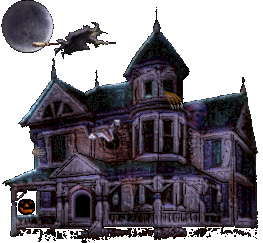
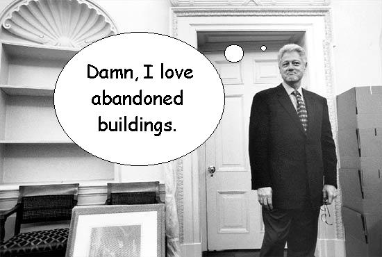

Some of the best abandoned structures in Ohio are private residences which have been left to rot by their owners for one reason or another. You'll often run across artifacts in old houses that you wouldn't find anywhere else. Just about everybody knows of a few old crumbling houses in their area; to take a look at the ones I've explored, click below.
Mudhouse Mansion
Mudhouse Road, east of Lancaster
Franklin Castle
Franklin Avenue, Cleveland
Prospect Place
North Dresden Road, Trinway
The Sidwell House
SR 22, Avondale
The M.M. Crites Octagon House
Near SR 23, Circleville
Renick Farmhouse
SR 23, north of South Bloomfield
The Prairie-Brock House
Prairie and Brock Roads, Jeffersonville
Danville Road Farmhouse
Danville Road, south of Newport
SR 104 Farmhouse
State Route 104, Grove City
White House
SR 23, north of South Bloomfield
Wooden House
South High Street, Columbus
1206 & 1208 Wyoming Avenue
Dayton, Ohio

HOME
forgottenohio@yahoo.com